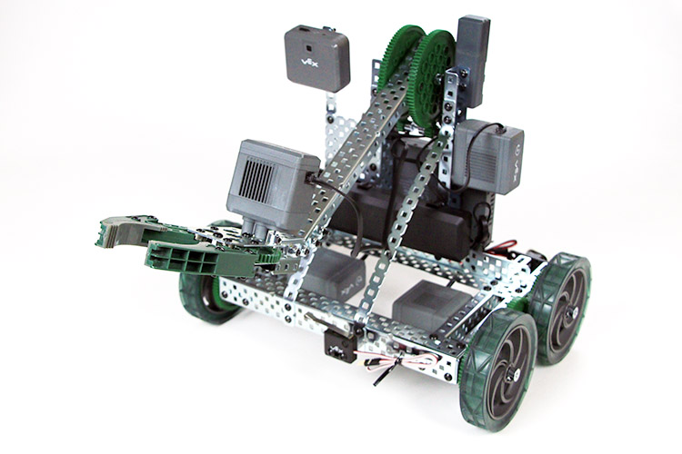

Programming the Clawbot
Objective
This tutorial will guide you through basic programming of the VEX Clawbot.
Intended Audience
This tutorial is intended for developers with some programming experience, but with little to no experience with the PROS library. If you haven't programmed before, we recommend checking out all the "Introduction and Basic C Features" sections of this tutorial series; you may also benefit from the "Pointers, Arrays and Strings" sections as well (although they aren't as pertinent).
Goals
At the end of this tutorial you will have:
- Understood the basic project structure of PROS
- Programmed a basic chassis with "tank" control or "arcade" control
- Programmed buttons to control the clawbot's lift
- Programmed a joystick axis to control the clawbot's claw
- Understood the standard subsystem module methodology
- Programmed a dead-reckoned autonomous routine
The Clawbot
Here's the robot we'll be programming:
You can follow VEX's tutorial for building this robot here.
For the purposes of this tutorial, we've plugged in our motors into the following ports:
Port Description Port Description
1 Left Wheels 11
2 12
3 Claw Motor 13
4 14
5 Vision Sensor 15
6 16
7 17
8 Arm Motor 18
9 19
10 Right Wheels 20
Port 21: Radio
For the ADI:
Port Description Port Description
A Left Bumper E
B Right Bumper F
C G
D H Arm Limit
Creating the Project
With Atom started, you can create a new PROS project by clicking the PROS menu, then click Create new Project.
Create a directory that you'd like to keep the source files for your Clawbot project.
Pick a directory to create the new project in and click Create. The PROS CLI will now copy the latest kernel template into the specified directory and Atom will open it.
PROS Project Structure
When you create your project, PROS will copy all of the files necessary to build your project. The structure of the project looks like:
Drive Control
Let's start with the simplest operator control setup for the clawbot - tank drive control. We'll map the controller's left joystick to the left drive motor and the controller's right joystick to the right drive motor.
The controller joystick can be read with the following function:
And we'll set the motors with the following function:
Before we get started with the tank drive control, it's important to note that in C++, smart devices have constructors that create the smart device object. Constructors are a standard C++ concept, and they're very important because a constructor is necessary to define a class for objects like the motors and controllers.
We'll be calling the constructors for the motors and controller at the beginning of opcontrol(), and then we'll run the tank drive code.
To test this code, run the following commands in the terminal window to create, build, and upload the code.
These 2 commands can be simplified to `prosv5 mu.
Arcade Control
While tank drive control is perfectly suitable for the driving style of some individuals, it is worth covering the arcade control method as well. This is similar to the movement style of many video games, where one joystick axis covers forward/backward movement and the other joystick covers turning.
We will take the previous tank drive control code and modify it slightly to become arcade control. The sum or difference of the power and turn joysticks will be the power values sent to the left and right wheels.
As with the tank drive code, this can be uploaded with the prosv5 mu command.
Arm Control
Next let's control the clawbot's arm. This will not require the use of a joystick, but instead we will use the controller's buttons.
We will use the following function to read the button press from the controller:
We will use a different motor movement function than on the drivetrain. By using the velocity-controlled movement functions, we can ensure that the lift moves at a constant speed regardless of the weight that the lift is holding.
To actuate the lift, we will check if the upmost right trigger is pressed or if the bottommost right trigger is pressed on the controller, and move the lift in that direction if so.
Claw Control
We will control the claw in the same manner as the lift, by toggling its movement with a controller button.
Reading the Switches
The bump switches, or buttons, are plugged into the ADI and attached to the rear of the robot. We'll monitor the status of the bump switches, and prevent the robot from driving backwards if the switches are pressed.
We will be using the digital reading functionality of the ADI for this.
And here is the updated code:
We will use a similar technique for reading the limit switch. If the limit switch is pressed, then we will prevent the lift from being driven down further.
Simple Autonomous
The autonomous program runs without the use of a controller. We will make a simple autonomous program that drives straight.